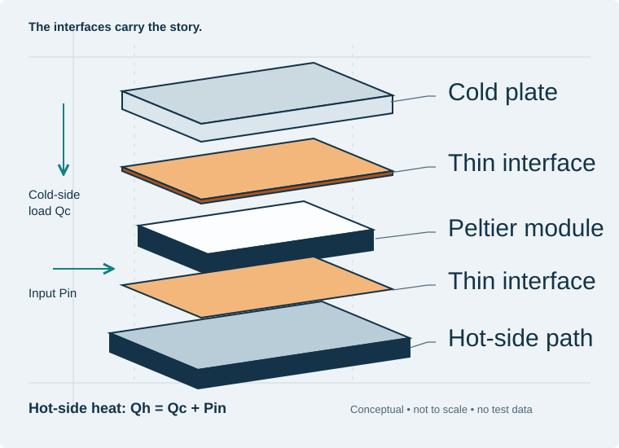

Source guidance
Keep manufacturer instructions attached to the product and conditions they describe. Different guides use different mounting assumptions; a value from one is not a universal rule.
The Cold Stack / Engineering research
A Peltier module is one part of a thermal system. I’m studying the interfaces around it: how to clamp it evenly, move heat out, and control moisture without assuming a seal solves every problem.
Research and illustrative calculations. No assembly built or physically validated for this study.

The research question
Module ratings alone do not settle the design. Plate stiffness, flatness, thermal interface material, fastener layout, temperature, and the surrounding humidity all affect the assembly I would eventually need to test.
I used an AI-assisted document artifact to organize the research and examine assembly drawings, an exploded view, and clamp arithmetic. This portfolio version turns that work into an original explanation with a smaller, traceable source set.
The useful outcome is a clearer set of questions and checks. A convincing drawing or a correct arithmetic result does not establish sealing performance, contact pressure, or thermal performance.
An interface-by-interface view
Move the layers apart to inspect the thermal path. The drawing separates functions; it does not specify dimensions, material selection, fastener locations, or an approved assembly.
The thermal interfaces need intimate contact. The clamp supplies load. Moisture protection addresses the environment around the cold region. These functions interact, but they are not interchangeable.
Mounting and mechanical compliance
Manufacturer mounting guidance emphasizes prepared mating surfaces, a thin thermal interface, and even loading. An average pressure calculation cannot tell me whether a flexible plate is bending or a corner of a brittle ceramic face is overloaded.
Before choosing a clamp, I would need the selected module’s requirements, plate geometry and stiffness, fastener arrangement, assembly sequence, and the behavior of any spring hardware over temperature. Torque is an indirect way to introduce load; friction and thread condition matter.
Moisture protection
A cold region below the surrounding dew point can collect condensation. Perimeter sealing, insulation, vapor paths, and material compatibility therefore belong in the assembly review, alongside the mechanical design.
A 1997 study by Michael J. Nagy used two moisture-test methods, with one sample per sealant in each method (n = 1). Its visual test on a polished substrate found epoxy adhesion failure with condensation after 24 hours. A separate mass-gain test on a rougher ceramic substrate reported no measured weight gain for its epoxy sample at the test’s resolution.
Those different outcomes are a reason to inspect the substrate, bond, and test method. They do not establish that every epoxy seal is waterproof or that one material always fails. Product-specific seal choices also need their own operating conditions.
Hot-side heat rejection
A Peltier module transfers heat rather than making it disappear. In a steady-state energy balance, the hot side must reject the heat removed from the cold side plus the electrical input to the module.
Qh = Qc + Pin
For an illustrative 20 W cold-side load and 40 W module input, the hot side would reject 60 W. This balance alone does not predict temperatures or establish a suitable heat sink. Those depend on the selected module, operating point, thermal resistances, and ambient conditions.
An inspectable calculation
This small calculator exposes the arithmetic behind a simplified clamp estimate. Change the assumed inputs to see their effect. It does not choose a pressure, torque, fastener, washer, or assembly method for a real module.
The initial values are an arithmetic demonstration. The worked example uses 125 psi to reproduce a calculation from the research; that pressure is not a recommendation.
Area = width × length. Total load = pressure × area. Torque per fastener = K × (total load ÷ fastener count) × nominal diameter.
Assumptions: uniform average contact pressure, equal fastener load, and an entered nut factor. Plate bending, local ceramic stress, friction variation, joint settlement, spring behavior, and thermal cycling are not modeled. A torque reading does not validate preload. Calculator input ranges are numerical guardrails, not material or operating limits.
What the artifact experience taught me
The original artifact’s drawings, 3D view, and calculation controls made the assembly easier to discuss. I found more value in separating the evidence than in treating the presentation as a finished design.
Keep manufacturer instructions attached to the product and conditions they describe. Different guides use different mounting assumptions; a value from one is not a universal rule.
Show the units, assumptions, and conversions. Reproduce a worked example, then vary the inputs to see what changes.
A drawing can reveal an unclear interface, but it is not a thermal solver, finite element analysis, or physical test. No thermal simulation, sealing test, or hardware acceptance is claimed here.
Before a physical prototype
My next step would be to select an actual module and application, then close these questions before defining a prototype:
Current evidence: source review, original explanatory drawings, and checked arithmetic. Physical performance, durability, moisture resistance, and safe operating settings remain unverified.
Sources and scope
This page is my original synthesis of the selected public references below. It links to the publishers instead of reproducing their figures or tables. Source review date: November 14, 2026.
Mounting surfaces, interface preparation, clamping, and a simplified torque relation.
The heat that must leave the hot side and the heat sink’s role in the system.
Application-dependent stresses, moisture, and thermal cycling considerations.
A manufacturer’s product-specific moisture-protection approach.
Different substrates and methods produced different observations; read the test conditions with the results.
A second manufacturer’s assembly guidance, to compare in its own context.
Get in touch
For engineering roles, freelance projects, or questions about this work, email me or connect on LinkedIn.
Résumé available on request.